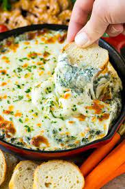

Spinach Dip

DESCRIPTION
This here is a real doozy of a recipe. It's Spinach Dip. A real classic.
There's uh, there's not much to say about this, other than that it's
delicious.
You'll just be combining everything, then putting it all together in a
nice sized bowl and voila, you can now dip anything in there. Chips,
cookies, fingers... Anything...
INGREDIENTS
- 1 (16oz) container sour cream
- 1 cup mayo
- 5oz spinach
- 4oz water chestnuts, chopped
- 1 (1.8oz) pack dry leek soup mix
- 1 (1lb) loaf round sourdough bread
STEPS
- Mix sour cream, mayo, spinach, water chestnuts, and dry leek
soup together in medium bowl. Chill in frige 6 hour, or overnight.
- Slice off top of bread round and pull out soft interior, leaving
a bread bowl. Fill with spinach mix and enjoy!
- Eat it.